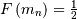
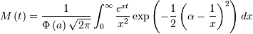
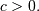
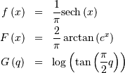
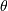
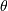
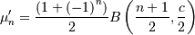
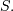
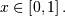
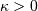

Table Of Contents
- Continuous Statistical Distributions
- Overview
- Alpha
- Anglit
- Arcsine
- Beta
- Beta Prime
- Bradford
- Burr
- Cauchy
- Chi
- Chi-squared
- Cosine
- Double Gamma
- Doubly Non-central F*
- Doubly Non-central t*
- Double Weibull
- Erlang
- Exponential
- Exponentiated Weibull
- Exponential Power
- Fatigue Life (Birnbaum-Sanders)
- Fisk (Log Logistic)
- Folded Cauchy
- Folded Normal
- Fratio (or F)
- Fréchet (ExtremeLB, Extreme Value II, Weibull minimum)
- Fréchet (left-skewed, Extreme Value Type III, Weibull maximum)
- Gamma
- Generalized Logistic
- Generalized Pareto
- Generalized Exponential
- Generalized Extreme Value
- Generalized Gamma
- Generalized Half-Logistic
- Gilbrat
- Gompertz (Truncated Gumbel)
- Gumbel (LogWeibull, Fisher-Tippetts, Type I Extreme Value)
- Gumbel Left-skewed (for minimum order statistic)
- HalfCauchy
- HalfNormal
- Half-Logistic
- Hyperbolic Secant
- Gauss Hypergeometric
- Inverted Gamma
- Inverse Normal (Inverse Gaussian)
- Inverted Weibull
- Johnson SB
- Johnson SU
- KSone
- KStwo
- Laplace (Double Exponential, Bilateral Expoooonential)
- Left-skewed Lévy
- Lévy
- Logistic (Sech-squared)
- Log Double Exponential (Log-Laplace)
- Log Gamma
- Log Normal (Cobb-Douglass)
- Nakagami
- Noncentral beta*
- Noncentral chi*
- Noncentral chi-squared
- Noncentral F
- Noncentral t
- Normal
- Maxwell
- Mielke’s Beta-Kappa
- Pareto
- Pareto Second Kind (Lomax)
- Power Log Normal
- Power Normal
- Power-function
- R-distribution
- Rayleigh
- Rice*
- Reciprocal
- Reciprocal Inverse Gaussian
- Semicircular
- Studentized Range*
- Student t
- Student Z
- Symmetric Power*
- Triangular
- Truncated Exponential
- Truncated Normal
- Tukey-Lambda
- Uniform
- Von Mises
- Wald
- Wishart*
- Wrapped Cauchy
Continuous Statistical Distributions¶
Overview¶
All distributions will have location (L) and Scale (S) parameters along with any shape parameters needed, the names for the shape parameters will vary. Standard form for the distributions will be given where and The nonstandard forms can be obtained for the various functions using (note is a standard uniform random variate).
| Function Name | Standard Function | Transformation |
|---|---|---|
| Cumulative Distribution Function (CDF) | ||
| Probability Density Function (PDF) | ||
| Percent Point Function (PPF) | ||
| Probability Sparsity Function (PSF) | ||
| Hazard Function (HF) | ||
| Cumulative Hazard Functon (CHF) |  |
|
| Survival Function (SF) | ||
| Inverse Survival Function (ISF) | ||
| Moment Generating Function (MGF) | ||
| Random Variates | ||
| (Differential) Entropy | ||
| (Non-central) Moments | ||
| Central Moments | ||
| mean (mode, median), var | ||
| skewness, kurtosis |
Moments¶
Non-central moments are defined using the PDF
Note, that these can always be computed using the PPF. Substitute  in the above equation and get
in the above equation and get
which may be easier to compute numerically. Note that so that Central moments are computed similarly
In particular
Skewness is defined as
while (Fisher) kurtosis is
so that a normal distribution has a kurtosis of zero.
Median and mode¶
The median, is defined as the point at which half of the density is on one side and half on the other. In other words,  so that
In addition, the mode, , is defined as the value for which the probability density function reaches it’s peak

Fitting data¶
To fit data to a distribution, maximizing the likelihood function is common. Alternatively, some distributions have well-known minimum variance unbiased estimators. These will be chosen by default, but the likelihood function will always be available for minimizing.
If is the PDF of a random-variable where is a vector of parameters ( e.g. and ), then for a collection of  independent samples from this distribution, the joint distribution the
random vector is
independent samples from this distribution, the joint distribution the
random vector is
The maximum likelihood estimate of the parameters are the parameters which maximize this function with fixed and given by the data:
Where

Note that if includes only shape parameters, the location and scale-parameters can
be fit by replacing  with in the log-likelihood function adding and minimizing, thus
with in the log-likelihood function adding and minimizing, thus
If desired, sample estimates for and (not necessarily maximum likelihood estimates) can be obtained from samples estimates of the mean and variance using
where  and are assumed known as the mean and variance of the untransformed distribution (when and ) and
and are assumed known as the mean and variance of the untransformed distribution (when and ) and
References¶
- Documentation for ranlib, rv2, cdflib
- Eric Weisstein~s world of mathematics http://mathworld.wolfram.com/, http://mathworld.wolfram.com/topics/StatisticalDistributions.html
- Documentation to Regress+ by Michael McLaughlin item Engineering and Statistics Handbook (NIST), http://www.itl.nist.gov/div898/handbook/index.htm
- Documentation for DATAPLOT from NIST, http://www.itl.nist.gov/div898/software/dataplot/distribu.htm
- Norman Johnson, Samuel Kotz, and N. Balakrishnan Continuous Univariate Distributions, second edition, Volumes I and II, Wiley & Sons, 1994.
Alpha¶
One shape parameters (parameter  in DATAPLOT
is a scale-parameter). Standard form is
in DATAPLOT
is a scale-parameter). Standard form is

No moments?

![h\left[X\right]\approx-0.24156447527049044468](../../_images/math/0ab625cd71c421fe77e987b4d7e6fc6212eb1e34.png)
![\begin{eqnarray*} f\left(x;a,b\right) & = & \frac{\Gamma\left(a+b\right)}{\Gamma\left(a\right)\Gamma\left(b\right)}x^{a-1}\left(1-x\right)^{b-1}I_{\left(0,1\right)}\left(x\right)\\ F\left(x;a,b\right) & = & \int_{0}^{x}f\left(y;a,b\right)dy=I\left(x,a,b\right)\\ G\left(\alpha;a,b\right) & = & I^{-1}\left(\alpha;a,b\right)\\ M\left(t\right) & = & \frac{\Gamma\left(a\right)\Gamma\left(b\right)}{\Gamma\left(a+b\right)}\,_{1}F_{1}\left(a;a+b;t\right)\\ \mu & = & \frac{a}{a+b}\\ \mu_{2} & = & \frac{ab\left(a+b+1\right)}{\left(a+b\right)^{2}}\\ \gamma_{1} & = & 2\frac{b-a}{a+b+2}\sqrt{\frac{a+b+1}{ab}}\\ \gamma_{2} & = & \frac{6\left(a^{3}+a^{2}\left(1-2b\right)+b^{2}\left(b+1\right)-2ab\left(b+2\right)\right)}{ab\left(a+b+2\right)\left(a+b+3\right)}\\ m_{d} & = & \frac{\left(a-1\right)}{\left(a+b-2\right)}\, a+b\neq2\end{eqnarray*}](../../_images/math/e7abf7fc6ff9bd509d2572958a316132cdcd1b02.png)
Beta Prime¶
Defined over (Note the CDF evaluation uses Eq. 3.194.1 on pg. 313 of Gradshteyn & Ryzhik (sixth edition).
Therefore,
![\begin{eqnarray*} \mu & = & \frac{\alpha}{\beta-1}\quad\beta>1\\ \mu_{2} & = & \frac{\alpha\left(\alpha+1\right)}{\left(\beta-2\right)\left(\beta-1\right)}-\frac{\alpha^{2}}{\left(\beta-1\right)^{2}}\quad\beta>2\\ \gamma_{1} & = & \frac{\frac{\alpha\left(\alpha+1\right)\left(\alpha+2\right)}{\left(\beta-3\right)\left(\beta-2\right)\left(\beta-1\right)}-3\mu\mu_{2}-\mu^{3}}{\mu_{2}^{3/2}}\quad\beta>3\\ \gamma_{2} & = & \frac{\mu_{4}}{\mu_{2}^{2}}-3\\ \mu_{4} & = & \frac{\alpha\left(\alpha+1\right)\left(\alpha+2\right)\left(\alpha+3\right)}{\left(\beta-4\right)\left(\beta-3\right)\left(\beta-2\right)\left(\beta-1\right)}-4\mu\mu_{3}-6\mu^{2}\mu_{2}-\mu^{4}\quad\beta>4\end{eqnarray*}](../../_images/math/5b17f2645e375d65319aad314943fca8bdf5027f.png)
![\begin{eqnarray*} f\left(x;c\right) & = & \frac{c}{k\left(1+cx\right)}I_{\left(0,1\right)}\left(x\right)\\ F\left(x;c\right) & = & \frac{\log\left(1+cx\right)}{k}\\ G\left(\alpha\; c\right) & = & \frac{\left(1+c\right)^{\alpha}-1}{c}\\ M\left(t\right) & = & \frac{1}{k}e^{-t/c}\left[\mathrm{Ei}\left(t+\frac{t}{c}\right)-\mathrm{Ei}\left(\frac{t}{c}\right)\right]\\ \mu & = & \frac{c-k}{ck}\\ \mu_{2} & = & \frac{\left(c+2\right)k-2c}{2ck^{2}}\\ \gamma_{1} & = & \frac{\sqrt{2}\left(12c^{2}-9kc\left(c+2\right)+2k^{2}\left(c\left(c+3\right)+3\right)\right)}{\sqrt{c\left(c\left(k-2\right)+2k\right)}\left(3c\left(k-2\right)+6k\right)}\\ \gamma_{2} & = & \frac{c^{3}\left(k-3\right)\left(k\left(3k-16\right)+24\right)+12kc^{2}\left(k-4\right)\left(k-3\right)+6ck^{2}\left(3k-14\right)+12k^{3}}{3c\left(c\left(k-2\right)+2k\right)^{2}}\\ m_{d} & = & 0\\ m_{n} & = & \sqrt{1+c}-1\end{eqnarray*}](../../_images/math/251884533a42e6634b789cb8d1e254baacbf9d9a.png)
![\begin{eqnarray*} f\left(x;c,d\right) & = & \frac{cd}{x^{c+1}\left(1+x^{-c}\right)^{d+1}}I_{\left(0,\infty\right)}\left(x\right)\\ F\left(x;c,d\right) & = & \left(1+x^{-c}\right)^{-d}\\ G\left(\alpha;c,d\right) & = & \left(\alpha^{-1/d}-1\right)^{-1/c}\\ \mu & = & \frac{\Gamma\left(1-\frac{1}{c}\right)\Gamma\left(\frac{1}{c}+d\right)}{\Gamma\left(d\right)}\\ \mu_{2} & = & \frac{k}{\Gamma^{2}\left(d\right)}\\ \gamma_{1} & = & \frac{1}{\sqrt{k^{3}}}\left[2\Gamma^{3}\left(1-\frac{1}{c}\right)\Gamma^{3}\left(\frac{1}{c}+d\right)+\Gamma^{2}\left(d\right)\Gamma\left(1-\frac{3}{c}\right)\Gamma\left(\frac{3}{c}+d\right)\right.\\ & & \left.-3\Gamma\left(d\right)\Gamma\left(1-\frac{2}{c}\right)\Gamma\left(1-\frac{1}{c}\right)\Gamma\left(\frac{1}{c}+d\right)\Gamma\left(\frac{2}{c}+d\right)\right]\\ \gamma_{2} & = & -3+\frac{1}{k^{2}}\left[6\Gamma\left(d\right)\Gamma\left(1-\frac{2}{c}\right)\Gamma^{2}\left(1-\frac{1}{c}\right)\Gamma^{2}\left(\frac{1}{c}+d\right)\Gamma\left(\frac{2}{c}+d\right)\right.\\ & & -3\Gamma^{4}\left(1-\frac{1}{c}\right)\Gamma^{4}\left(\frac{1}{c}+d\right)+\Gamma^{3}\left(d\right)\Gamma\left(1-\frac{4}{c}\right)\Gamma\left(\frac{4}{c}+d\right)\\ & & \left.-4\Gamma^{2}\left(d\right)\Gamma\left(1-\frac{3}{c}\right)\Gamma\left(1-\frac{1}{c}\right)\Gamma\left(\frac{1}{c}+d\right)\Gamma\left(\frac{3}{c}+d\right)\right]\\ m_{d} & = & \left(\frac{cd-1}{c+1}\right)^{1/c}\,\mathrm{if }cd>1\,\mathrm{otherwise }0\\ m_{n} & = & \left(2^{1/d}-1\right)^{-1/c}\end{eqnarray*}](../../_images/math/22d323ffbc21f3fdb48840fb909ed81303078934.png)
Chi-squared¶
This is the gamma distribution with and and where  is called the degrees of freedom. If are all standard normal distributions, then has (standard) chi-square distribution with degrees of freedom.
is called the degrees of freedom. If are all standard normal distributions, then has (standard) chi-square distribution with degrees of freedom.
The standard form (most often used in standard form only) is
![\begin{eqnarray*} f\left(x\right) & = & \frac{1}{2\pi}\left[1+\cos x\right]I_{\left[-\pi,\pi\right]}\left(x\right)\\ F\left(x\right) & = & \frac{1}{2\pi}\left[\pi+x+\sin x\right]I_{\left[-\pi,\pi\right]}\left(x\right)+I_{\left(\pi,\infty\right)}\left(x\right)\\ G\left(\alpha\right) & = & F^{-1}\left(\alpha\right)\\ M\left(t\right) & = & \frac{\sinh\left(\pi t\right)}{\pi t\left(1+t^{2}\right)}\\ \mu=m_{d}=m_{n} & = & 0\\ \mu_{2} & = & \frac{\pi^{2}}{3}-2\\ \gamma_{1} & = & 0\\ \gamma_{2} & = & \frac{-6\left(\pi^{4}-90\right)}{5\left(\pi^{2}-6\right)^{2}}\end{eqnarray*}](../../_images/math/72fd6a314049df8cfbfc6d49a334f19f7a213f69.png)
![\begin{eqnarray*} f\left(x;\alpha\right) & = & \frac{1}{2\Gamma\left(\alpha\right)}\left|x\right|^{\alpha-1}e^{-\left|x\right|}\\ F\left(x;\alpha\right) & = & \left\{ \begin{array}{ccc} \frac{1}{2}-\frac{1}{2}\Gamma\left(\alpha,\left|x\right|\right) & & x\leq0\\ \frac{1}{2}+\frac{1}{2}\Gamma\left(\alpha,\left|x\right|\right) & & x>0\end{array}\right.\\ G\left(q;\alpha\right) & = & \left\{ \begin{array}{ccc} -\Gamma^{-1}\left(\alpha,\left|2q-1\right|\right) & & q\leq\frac{1}{2}\\ \Gamma^{-1}\left(\alpha,\left|2q-1\right|\right) & & q>\frac{1}{2}\end{array}\right.\end{eqnarray*}](../../_images/math/3e3ba23fd038989d8e2db45f83b0bd1a8dbc9b1b.png)
Doubly Non-central F*¶
Doubly Non-central t*¶
![\begin{eqnarray*} f\left(x;c\right) & = & \frac{c}{2}\left|x\right|^{c-1}\exp\left(-\left|x\right|^{c}\right)\\ F\left(x;c\right) & = & \left\{ \begin{array}{ccc} \frac{1}{2}\exp\left(-\left|x\right|^{c}\right) & & x\leq0\\ 1-\frac{1}{2}\exp\left(-\left|x\right|^{c}\right) & & x>0\end{array}\right.\\ G\left(q;c\right) & = & \left\{ \begin{array}{ccc} -\log^{1/c}\left(\frac{1}{2q}\right) & & q\leq\frac{1}{2}\\ \log^{1/c}\left(\frac{1}{2q-1}\right) & & q>\frac{1}{2}\end{array}\right.\end{eqnarray*}](../../_images/math/a1b72bffe8136fa28a1d9b7cf71fe1682d5713e1.png)
Erlang¶
This is just the Gamma distribution with shape parameter an integer.
Exponential¶
This is a special case of the Gamma (and Erlang) distributions with shape parameter and the same location and scale parameters. The standard form is therefore ( )
Fatigue Life (Birnbaum-Sanders)¶
This distribution’s pdf is the average of the inverse-Gaussian and reciprocal inverse-Gaussian pdf . We follow the notation of JKB here with for
![\begin{eqnarray*} f\left(x;c,d\right) & = & \frac{cx^{c-1}}{\left(1+x^{c}\right)^{2}}I_{\left(0,\infty\right)}\left(x\right)\\ F\left(x;c,d\right) & = & \left(1+x^{-c}\right)^{-1}\\ G\left(\alpha;c,d\right) & = & \left(\alpha^{-1}-1\right)^{-1/c}\\ \mu & = & \Gamma\left(1-\frac{1}{c}\right)\Gamma\left(\frac{1}{c}+1\right)\\ \mu_{2} & = & k\\ \gamma_{1} & = & \frac{1}{\sqrt{k^{3}}}\left[2\Gamma^{3}\left(1-\frac{1}{c}\right)\Gamma^{3}\left(\frac{1}{c}+1\right)+\Gamma\left(1-\frac{3}{c}\right)\Gamma\left(\frac{3}{c}+1\right)\right.\\ & & \left.-3\Gamma\left(1-\frac{2}{c}\right)\Gamma\left(1-\frac{1}{c}\right)\Gamma\left(\frac{1}{c}+1\right)\Gamma\left(\frac{2}{c}+1\right)\right]\\ \gamma_{2} & = & -3+\frac{1}{k^{2}}\left[6\Gamma\left(1-\frac{2}{c}\right)\Gamma^{2}\left(1-\frac{1}{c}\right)\Gamma^{2}\left(\frac{1}{c}+1\right)\Gamma\left(\frac{2}{c}+1\right)\right.\\ & & -3\Gamma^{4}\left(1-\frac{1}{c}\right)\Gamma^{4}\left(\frac{1}{c}+1\right)+\Gamma\left(1-\frac{4}{c}\right)\Gamma\left(\frac{4}{c}+1\right)\\ & & \left.-4\Gamma\left(1-\frac{3}{c}\right)\Gamma\left(1-\frac{1}{c}\right)\Gamma\left(\frac{1}{c}+1\right)\Gamma\left(\frac{3}{c}+1\right)\right]\\ m_{d} & = & \left(\frac{c-1}{c+1}\right)^{1/c}\,\mathrm{if }c>1\,\mathrm{otherwise }0\\ m_{n} & = & 1\end{eqnarray*}](../../_images/math/81f917b534d4f45354dc6acd7dfa620a074ae8d6.png)
Folded Cauchy¶
This formula can be expressed in terms of the standard formulas for the Cauchy distribution (call the cdf and the pdf ). if is cauchy then is folded cauchy. Note that
No moments
Folded Normal¶
If is Normal with mean and , then is a folded normal with shape parameter  , location parameter and scale parameter . This is a special case of the non-central chi distribution with one-
degree of freedom and non-centrality parameter Note that . The standard form of the folded normal is
, location parameter and scale parameter . This is a special case of the non-central chi distribution with one-
degree of freedom and non-centrality parameter Note that . The standard form of the folded normal is
![\begin{eqnarray*} k & = & \mathrm{erf}\left(\frac{c}{\sqrt{2}}\right)\\ p & = & \exp\left(-\frac{c^{2}}{2}\right)\\ \mu & = & \sqrt{\frac{2}{\pi}}p+ck\\ \mu_{2} & = & c^{2}+1-\mu^{2}\\ \gamma_{1} & = & \frac{\sqrt{\frac{2}{\pi}}p^{3}\left(4-\frac{\pi}{p^{2}}\left(2c^{2}+1\right)\right)+2ck\left(6p^{2}+3cpk\sqrt{2\pi}+\pi c\left(k^{2}-1\right)\right)}{\pi\mu_{2}^{3/2}}\\ \gamma_{2} & = & \frac{c^{4}+6c^{2}+3+6\left(c^{2}+1\right)\mu^{2}-3\mu^{4}-4p\mu\left(\sqrt{\frac{2}{\pi}}\left(c^{2}+2\right)+\frac{ck}{p}\left(c^{2}+3\right)\right)}{\mu_{2}^{2}}\end{eqnarray*}](../../_images/math/d665660435296e5b4eb991ec2c6721f69b4c91f6.png)
Fratio (or F)¶
Defined for . The distribution of if is chi-squared with degrees of freedom and is chi-squared with degrees of freedom.
![\begin{eqnarray*} f\left(x;\nu_{1},\nu_{2}\right) & = & \frac{\nu_{2}^{\nu_{2}/2}\nu_{1}^{\nu_{1}/2}x^{\nu_{1}/2-1}}{\left(\nu_{2}+\nu_{1}x\right)^{\left(\nu_{1}+\nu_{2}\right)/2}B\left(\frac{\nu_{1}}{2},\frac{\nu_{2}}{2}\right)}\\ F\left(x;v_{1},v_{2}\right) & = & I\left(\frac{\nu_{1}}{2},\frac{\nu_{2}}{2},\frac{\nu_{2}x}{\nu_{2}+\nu_{1}x}\right)\\ G\left(q;\nu_{1},\nu_{2}\right) & = & \left[\frac{\nu_{2}}{I^{-1}\left(\nu_{1}/2,\nu_{2}/2,q\right)}-\frac{\nu_{1}}{\nu_{2}}\right]^{-1}.\end{eqnarray*}](../../_images/math/5aa1757983b2eff0dea69423eec1470095fb7651.png)
![\begin{eqnarray*} \mu & = & \frac{\nu_{2}}{\nu_{2}-2}\quad\nu_{2}>2\\ \mu_{2} & = & \frac{2\nu_{2}^{2}\left(\nu_{1}+\nu_{2}-2\right)}{\nu_{1}\left(\nu_{2}-2\right)^{2}\left(\nu_{2}-4\right)}\quad v_{2}>4\\ \gamma_{1} & = & \frac{2\left(2\nu_{1}+\nu_{2}-2\right)}{\nu_{2}-6}\sqrt{\frac{2\left(\nu_{2}-4\right)}{\nu_{1}\left(\nu_{1}+\nu_{2}-2\right)}}\quad\nu_{2}>6\\ \gamma_{2} & = & \frac{3\left[8+\left(\nu_{2}-6\right)\gamma_{1}^{2}\right]}{2\nu-16}\quad\nu_{2}>8\end{eqnarray*}](../../_images/math/1d320914edaa1b7857884f9a6ccabee016cdf0b1.png)
Fréchet (ExtremeLB, Extreme Value II, Weibull minimum)¶
A type of extreme-value distribution with a lower bound. Defined for and
![\begin{eqnarray*} \mu & = & \Gamma\left(1+\frac{1}{c}\right)\\ \mu_{2} & = & \Gamma\left(1+\frac{2}{c}\right)-\Gamma^{2}\left(1-\frac{1}{c}\right)\\ \gamma_{1} & = & \frac{\Gamma\left(1+\frac{3}{c}\right)-3\Gamma\left(1+\frac{2}{c}\right)\Gamma\left(1+\frac{1}{c}\right)+2\Gamma^{3}\left(1+\frac{1}{c}\right)}{\mu_{2}^{3/2}}\\ \gamma_{2} & = & \frac{\Gamma\left(1+\frac{4}{c}\right)-4\Gamma\left(1+\frac{1}{c}\right)\Gamma\left(1+\frac{3}{c}\right)+6\Gamma^{2}\left(1+\frac{1}{c}\right)\Gamma\left(1+\frac{2}{c}\right)-\Gamma^{4}\left(1+\frac{1}{c}\right)}{\mu_{2}^{2}}-3\\ m_{d} & = & \left(\frac{c}{1+c}\right)^{1/c}\\ m_{n} & = & G\left(\frac{1}{2};c\right)\end{eqnarray*}](../../_images/math/47fcbfdb6ab0e7c02cc42828251811951ae0601c.png)
where is Euler’s constant and equal to
Fréchet (left-skewed, Extreme Value Type III, Weibull maximum)¶
Defined for and .
The mean is the negative of the right-skewed Frechet distribution given above, and the other statistical parameters can be computed from
where is Euler’s constant and equal to
Generalized Logistic¶
Has been used in the analysis of extreme values. Has one shape parameter  And
![\begin{eqnarray*} f\left(x;c\right) & = & \frac{c\exp\left(-x\right)}{\left[1+\exp\left(-x\right)\right]^{c+1}}\\ F\left(x;c\right) & = & \frac{1}{\left[1+\exp\left(-x\right)\right]^{c}}\\ G\left(q;c\right) & = & -\log\left(q^{-1/c}-1\right)\end{eqnarray*}](../../_images/math/0dbccb8d0941231f187ebfbd6afaf23def782b4a.png)
Note that the polygamma function is
where is a generalization of the Riemann zeta function called the Hurwitz zeta function Note that
Generalized Extreme Value¶
Extreme value distributions with shape parameter .
For defined on
So,
![\begin{eqnarray*} \mu_{1}^{\prime} & = & \frac{1}{c}\left(1-\Gamma\left(1+c\right)\right)\quad c>-1\\ \mu_{2}^{\prime} & = & \frac{1}{c^{2}}\left(1-2\Gamma\left(1+c\right)+\Gamma\left(1+2c\right)\right)\quad c>-\frac{1}{2}\\ \mu_{3}^{\prime} & = & \frac{1}{c^{3}}\left(1-3\Gamma\left(1+c\right)+3\Gamma\left(1+2c\right)-\Gamma\left(1+3c\right)\right)\quad c>-\frac{1}{3}\\ \mu_{4}^{\prime} & = & \frac{1}{c^{4}}\left(1-4\Gamma\left(1+c\right)+6\Gamma\left(1+2c\right)-4\Gamma\left(1+3c\right)+\Gamma\left(1+4c\right)\right)\quad c>-\frac{1}{4}\end{eqnarray*}](../../_images/math/968dd4b547ee092fef217941eaffe5ed54b86e44.png)
For defined on For defined over all space
This is just the (left-skewed) Gumbel distribution for c=0.
Generalized Gamma¶
A general probability form that reduces to many common distributions: and
![\begin{eqnarray*} f\left(x;a,c\right) & = & \frac{\left|c\right|x^{ca-1}}{\Gamma\left(a\right)}\exp\left(-x^{c}\right)\\ F\left(x;a,c\right) & = & \begin{array}{cc} \frac{\Gamma\left(a,x^{c}\right)}{\Gamma\left(a\right)} & c>0\\ 1-\frac{\Gamma\left(a,x^{c}\right)}{\Gamma\left(a\right)} & c<0\end{array}\\ G\left(q;a,c\right) & = & \left\{ \Gamma^{-1}\left[a,\Gamma\left(a\right)q\right]\right\} ^{1/c}\quad c>0\\ & & \left\{ \Gamma^{-1}\left[a,\Gamma\left(a\right)\left(1-q\right)\right]\right\} ^{1/c}\quad c<0\end{eqnarray*}](../../_images/math/0312f7dff6300ac2ec5379ce61d5344c8b25d4b9.png)

Special cases are Weibull , half-normal and ordinary gamma distributions If then it is the inverted gamma distribution.
Gompertz (Truncated Gumbel)¶
For and . In JKB the two shape parameters are reduced to the single shape-parameter . As is just a scale parameter when . If the distribution reduces to the exponential distribution scaled by Thus, the standard form is given as
where
Gumbel (LogWeibull, Fisher-Tippetts, Type I Extreme Value)¶
One of a clase of extreme value distributions (right-skewed).
Gumbel Left-skewed (for minimum order statistic)¶
Note, that is negative the mean for the right-skewed distribution. Similar for
median and mode. All other moments are the same.
HalfCauchy¶
If is Hyperbolic Secant distributed then is Half-Cauchy distributed. Also, if is (standard) Cauchy distributed, then is Half-Cauchy distributed. Special case of the Folded Cauchy distribution with The standard form is
No moments, as the integrals diverge.
HalfNormal¶
This is a special case of the chi distribution with and and This is also a special case of the folded normal with shape parameter and If is (standard) normally distributed then, is half-normal. The standard form is
Half-Logistic¶
In the limit as for the generalized half-logistic we have the half-logistic defined over Also, the distribution of where has logistic distribtution.
Hyperbolic Secant¶
Related to the logistic distribution and used in lifetime analysis. Standard form is (defined over all )

where is an integer given by
where is the Bernoulli polynomial of order evaluated at Thus
![h\left[X\right]=\log\left(2\pi\right).](../../_images/math/4f08fe3f0bd2e53bf4cf6b8f8237568dfe59fa67.png)
Inverse Normal (Inverse Gaussian)¶
The standard form involves the shape parameter (in most definitions, is used). (In terms of the regress documentation ) and and is not a parameter in that distribution. A standard form is
This is related to the canonical form or JKB “two-parameter “inverse Gaussian when written in it’s full form with scale parameter and location parameter by taking and then is equal to where is the parameter used by JKB. We prefer this form because of it’s consistent use of the scale parameter. Notice that in JKB the skew and the kurtosis ( ) are both functions only of as shown here, while the variance and mean of the standard form here are transformed appropriately.
KSone¶
KStwo¶
Laplace (Double Exponential, Bilateral Expoooonential)¶
The ML estimator of the location parameter is
where is a sequence of mutually independent Laplace RV’s and the median is some number
between the and the order statistic ( e.g. take the average of these two) when is even. Also,
Replace with if it is known. If is known then this estimator is distributed as .
Left-skewed Lévy¶
Special case of Lévy-stable distribution with and the support is . In standard form
No moments.
Lévy¶
A special case of Lévy-stable distributions with and . In standard form it is defined for as
It has no finite moments.

Log Normal (Cobb-Douglass)¶
Has one shape parameter >0. (Notice that the “Regress “ where is the scale parameter and  is the mean of the underlying normal distribution). The standard form
is
is the mean of the underlying normal distribution). The standard form
is
Notice that using JKB notation we have  and we have given the so-called antilognormal form of the
distribution. This is more consistent with the location, scale
parameter description of general probability distributions.
and we have given the so-called antilognormal form of the
distribution. This is more consistent with the location, scale
parameter description of general probability distributions.
Also, note that if is a log-normally distributed random-variable with and and shape parameter Then, is normally distributed with variance and mean
Noncentral chi*¶
Noncentral chi-squared¶
The distribution of where are independent standard normal variables and are constants. (In communications it is called the Marcum-Q function). Can be thought of as a Generalized Rayleigh-Rice distribution. For
![\begin{eqnarray*} f\left(x;\lambda,\nu_{1},\nu_{2}\right) & = & \exp\left[\frac{\lambda}{2}+\frac{\left(\lambda\nu_{1}x\right)}{2\left(\nu_{1}x+\nu_{2}\right)}\right]\nu_{1}^{\nu_{1}/2}\nu_{2}^{\nu_{2}/2}x^{\nu_{1}/2-1}\\ & & \times\left(\nu_{2}+\nu_{1}x\right)^{-\left(\nu_{1}+\nu_{2}\right)/2}\frac{\Gamma\left(\frac{\nu_{1}}{2}\right)\Gamma\left(1+\frac{\nu_{2}}{2}\right)L_{\nu_{2}/2}^{\nu_{1}/2-1}\left(-\frac{\lambda\nu_{1}x}{2\left(\nu_{1}x+\nu_{2}\right)}\right)}{B\left(\frac{\nu_{1}}{2},\frac{\nu_{2}}{2}\right)\Gamma\left(\frac{\nu_{1}+\nu_{2}}{2}\right)}\end{eqnarray*}](../../_images/math/1976b7450fa7fca3dc33f32ed2b71e659dcfbbb3.png)
Noncentral t¶
The distribution of the ratio
where and are independent and distributed as a standard normal and chi with degrees of freedom. Note and .
![\begin{eqnarray*} f\left(x;\lambda,\nu\right) & = & \frac{\nu^{\nu/2}\Gamma\left(\nu+1\right)}{2^{\nu}e^{\lambda^{2}/2}\left(\nu+x^{2}\right)^{\nu/2}\Gamma\left(\nu/2\right)}\\ & & \times\left\{ \frac{\sqrt{2}\lambda x\,_{1}F_{1}\left(\frac{\nu}{2}+1;\frac{3}{2};\frac{\lambda^{2}x^{2}}{2\left(\nu+x^{2}\right)}\right)}{\left(\nu+x^{2}\right)\Gamma\left(\frac{\nu+1}{2}\right)}\right.\\ & & -\left.\frac{\,_{1}F_{1}\left(\frac{\nu+1}{2};\frac{1}{2};\frac{\lambda^{2}x^{2}}{2\left(\nu+x^{2}\right)}\right)}{\sqrt{\nu+x^{2}}\Gamma\left(\frac{\nu}{2}+1\right)}\right\} \\ & = & \frac{\Gamma\left(\nu+1\right)}{2^{\left(\nu-1\right)/2}\sqrt{\pi\nu}\Gamma\left(\nu/2\right)}\exp\left[-\frac{\nu\lambda^{2}}{\nu+x^{2}}\right]\\ & & \times\left(\frac{\nu}{\nu+x^{2}}\right)^{\left(\nu-1\right)/2}Hh_{\nu}\left(-\frac{\lambda x}{\sqrt{\nu+x^{2}}}\right)\\ F\left(x;\lambda,\nu\right) & =\end{eqnarray*}](../../_images/math/5b84101fdcf93f6ca9e97371dc44c76305cac979.png)
Mielke’s Beta-Kappa¶
A generalized F distribution. Two shape parameters  and  , and . The in the DATAPLOT reference is a scale parameter.
and  , and . The in the DATAPLOT reference is a scale parameter.

Power Log Normal¶
A generalization of the log-normal distribution  and and
and and
This distribution reduces to the log-normal distribution when
Power Normal¶
A generalization of the normal distribution, for
For this reduces to the normal distribution.

![h\left[X\right]=1-\frac{1}{a}-\log\left(a\right)](../../_images/math/015df1c5ef54254bf193121619465d60da9f9834.png)
R-distribution¶
A general-purpose distribution with a variety of shapes controlled by Range of standard distribution is

The R-distribution with parameter  is the distribution of the correlation coefficient of a random sample
of size drawn from a bivariate normal distribution with The mean of the standard distribution is always zero and as the sample
size grows, the distribution’s mass concentrates more closely about
this mean.
is the distribution of the correlation coefficient of a random sample
of size drawn from a bivariate normal distribution with The mean of the standard distribution is always zero and as the sample
size grows, the distribution’s mass concentrates more closely about
this mean.
Rayleigh¶
This is Chi distribution with and and (no location parameter is generally used), the mode of the distribution is 
![\begin{eqnarray*} d & = & \log\left(a/b\right)\\ \mu & = & \frac{a-b}{d}\\ \mu_{2} & = & \mu\frac{a+b}{2}-\mu^{2}=\frac{\left(a-b\right)\left[a\left(d-2\right)+b\left(d+2\right)\right]}{2d^{2}}\\ \gamma_{1} & = & \frac{\sqrt{2}\left[12d\left(a-b\right)^{2}+d^{2}\left(a^{2}\left(2d-9\right)+2abd+b^{2}\left(2d+9\right)\right)\right]}{3d\sqrt{a-b}\left[a\left(d-2\right)+b\left(d+2\right)\right]^{3/2}}\\ \gamma_{2} & = & \frac{-36\left(a-b\right)^{3}+36d\left(a-b\right)^{2}\left(a+b\right)-16d^{2}\left(a^{3}-b^{3}\right)+3d^{3}\left(a^{2}+b^{2}\right)\left(a+b\right)}{3\left(a-b\right)\left[a\left(d-2\right)+b\left(d+2\right)\right]^{2}}-3\\ m_{d} & = & a\\ m_{n} & = & \sqrt{ab}\end{eqnarray*}](../../_images/math/2a18d34c5dfe31509333a99e3e4f89f26c3691bf.png)
 defined for as
defined for asStudentized Range*¶
Student t¶
Shape parameter is the incomplete beta integral and
![\begin{eqnarray*} f\left(x;\nu\right) & = & \frac{\Gamma\left(\frac{\nu+1}{2}\right)}{\sqrt{\pi\nu}\Gamma\left(\frac{\nu}{2}\right)\left[1+\frac{x^{2}}{\nu}\right]^{\frac{\nu+1}{2}}}\\ F\left(x;\nu\right) & = & \left\{ \begin{array}{ccc} \frac{1}{2}I\left(\frac{\nu}{2},\frac{1}{2},\frac{\nu}{\nu+x^{2}}\right) & & x\leq0\\ 1-\frac{1}{2}I\left(\frac{\nu}{2},\frac{1}{2},\frac{\nu}{\nu+x^{2}}\right) & & x\geq0\end{array}\right.\\ G\left(q;\nu\right) & = & \left\{ \begin{array}{ccc} -\sqrt{\frac{\nu}{I^{-1}\left(\frac{\nu}{2},\frac{1}{2},2q\right)}-\nu} & & q\leq\frac{1}{2}\\ \sqrt{\frac{\nu}{I^{-1}\left(\frac{\nu}{2},\frac{1}{2},2-2q\right)}-\nu} & & q\geq\frac{1}{2}\end{array}\right.\end{eqnarray*}](../../_images/math/5cb4f75fdfa84acbc3ffb77c121ffd718f0a94bf.png)
As this distribution approaches the standard normal distribution.
where
Student Z¶
The student Z distriubtion is defined over all space with one shape parameter
![\begin{eqnarray*} f\left(x;\nu\right) & = & \frac{\Gamma\left(\frac{\nu}{2}\right)}{\sqrt{\pi}\Gamma\left(\frac{\nu-1}{2}\right)}\left(1+x^{2}\right)^{-\nu/2}\\ F\left(x;\nu\right) & = & \left\{ \begin{array}{ccc} Q\left(x;\nu\right) & & x\leq0\\ 1-Q\left(x;\nu\right) & & x\geq0\end{array}\right.\\ Q\left(x;\nu\right) & = & \frac{\left|x\right|^{1-n}\Gamma\left(\frac{n}{2}\right)\,_{2}F_{1}\left(\frac{n-1}{2},\frac{n}{2};\frac{n+1}{2};-\frac{1}{x^{2}}\right)}{2\sqrt{\pi}\Gamma\left(\frac{n+1}{2}\right)}\end{eqnarray*}](../../_images/math/db034bbb2e6c45a0af383012a05fb0dd194cff52.png)
Interesting moments are
The moment generating function is
Symmetric Power*¶
Triangular¶
One shape parameter giving the distance to the peak as a percentage of the total extent of the non-zero portion. The location parameter is the start of the non- zero portion, and the scale-parameter is the width of the non-zero portion. In standard form we have 

Truncated Exponential¶
This is an exponential distribution defined only over a certain region . In standard form this is
Truncated Normal¶
A normal distribution restricted to lie within a certain range given
by two parameters and . Notice that this and correspond to the bounds on in standard form. For we get
where
![\begin{eqnarray*} \mu & = & 0\\ \mu_{2} & = & \int_{0}^{1}G^{2}\left(p;\lambda\right)dp\\ & = & \frac{2\Gamma\left(\lambda+\frac{3}{2}\right)-\lambda4^{-\lambda}\sqrt{\pi}\Gamma\left(\lambda\right)\left(1-2\lambda\right)}{\lambda^{2}\left(1+2\lambda\right)\Gamma\left(\lambda+\frac{3}{2}\right)}\\ \gamma_{1} & = & 0\\ \gamma_{2} & = & \frac{\mu_{4}}{\mu_{2}^{2}}-3\\ \mu_{4} & = & \frac{3\Gamma\left(\lambda\right)\Gamma\left(\lambda+\frac{1}{2}\right)2^{-2\lambda}}{\lambda^{3}\Gamma\left(2\lambda+\frac{3}{2}\right)}+\frac{2}{\lambda^{4}\left(1+4\lambda\right)}\\ & & -\frac{2\sqrt{3}\Gamma\left(\lambda\right)2^{-6\lambda}3^{3\lambda}\Gamma\left(\lambda+\frac{1}{3}\right)\Gamma\left(\lambda+\frac{2}{3}\right)}{\lambda^{3}\Gamma\left(2\lambda+\frac{3}{2}\right)\Gamma\left(\lambda+\frac{1}{2}\right)}.\end{eqnarray*}](../../_images/math/7952b80d608cbfd96be30bc8d69a4bdce450f271.png)
Von Mises¶
Defined for with shape parameter  . Note, the PDF and CDF functions are periodic and are always defined over regardless of the location parameter. Thus, if an input beyond this range is given, it is converted to the equivalent angle in this range. For values of the PDF and CDF formulas below are used. Otherwise, a normal approximation with variance is used.
This can be used for defining circular variance.
![\begin{eqnarray*} f\left(x;c\right) & = & \frac{1-c^{2}}{2\pi\left(1+c^{2}-2c\cos x\right)}\\ g_{c}\left(x\right) & = & \frac{1}{\pi}\arctan\left[\frac{1+c}{1-c}\tan\left(\frac{x}{2}\right)\right]\\ r_{c}\left(q\right) & = & 2\arctan\left[\frac{1-c}{1+c}\tan\left(\pi q\right)\right]\\ F\left(x;c\right) & = & \left\{ \begin{array}{ccc} g_{c}\left(x\right) & & 0\leq x<\pi\\ 1-g_{c}\left(2\pi-x\right) & & \pi\leq x\leq2\pi\end{array}\right.\\ G\left(q;c\right) & = & \left\{ \begin{array}{ccc} r_{c}\left(q\right) & & 0\leq q<\frac{1}{2}\\ 2\pi-r_{c}\left(1-q\right) & & \frac{1}{2}\leq q\leq1\end{array}\right.\end{eqnarray*}](../../_images/math/5b0d1fd5bb3418f6fa1dca9d0585ff0116443616.png)